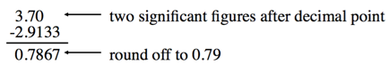
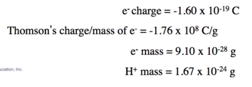

Week 2 - Day 1
Navigate using audio
Announcements
- Sig figs are covered in appendix III
We left off:
- Audio 0:01:29.531683
Addition or Subtraction - Significant Figures
- The answer cannot have more digits to the right of the decimal point than any of the original numbers

- 1.1 has one sig fig after decimal
- round 90.432 to 90.4
- 
- Look at sig figs in the given variables in the problem and have that many in your answer
- Do not round until the end of the calculation
Significant Figures - Multiplication or Division
- Audio 0:03:48.566124
- The number of significant figures in the result is set by the original number that has the smallest number of significant figures
Significant Figures - Exact Numbers
- Audio 0:05:48.200501
- Numbers from definitions or numbers of objects are considered to have an infinite number of significant figures The average of three measured lengths; 6.64, 6.68 and 6.70?
- Because 3 is an exact number
- You don’t round to one sig fig because you ignore exact numbers when determining how many to round to
Significant Figures - Precision vs accuracy
- Audio 0:08:18.238337
- Accuracy – how close a measurement is to the true value
- Precision – how close a set of measurements are to each other
How many significant figures are in the measurement 0.0005890g?
- Audio 0:12:09.150335
- Answer: 4
What answer should be reported, with the correct number of significant figures for the following calculation? => (433.621 - 333.9) * 11.900
- The calculation yields 1186.6799
- You round to three sig figs because 99.721 has three sig figs after you subtract 433.621 from 333.9. has the smallest amount of sig figs since you choose the smallest with multiplication
- Audio 0:20:48.415419
- Confused how 99.721 has 3 sig figs and 11.900 has five
- I think it’s because we’ve subtracted and the way he explained it (I think) is that you start from the right most sig figs after the decimal and count up to it
- Confused how 99.721 has 3 sig figs and 11.900 has five
Our Current Understanding of the Structure of Matter
Early Ideas about the Building Blocks of Matter
- Audio 0:23:16.678865
- Leucippus (fifth century B.C.) and his student Democritus (460–370 B.C.) were the first to propose that matter was composed of small, indestructible particles.
- Democritus wrote, “Nothing exists except atoms and empty space; everything else is opinion.”
- He proposed that atoms existed in different shapes and sizes and moved randomly through empty space.
- Democritus wrote, “Nothing exists except atoms and empty space; everything else is opinion.”
- Plato and Aristotle did not embrace the atomic ideas of Leucippus and Democritus.
- They held that matter had no smallest parts.
- They proposed that different substances were composed of various proportions of fire, air, earth, and water.
Early Building Blocks of Matter Ideas
- Audio 0:24:38.965354
- An English chemist, John Dalton (1766–1844) offered convincing evidence that supported the early atomic ideas of Leucippus and Democritus.
- Dalton’s atomic theory of matter
- Modern Atomic Theory and Its Laws:
- Law of conservation of mass
- Law of definite proportions
- Law of multiple proportions
John Dalton and the Atomic Theory
- John Dalton and the Atomic Theory
- Each element is composed of tiny indestructible particles called atoms.
- All atoms of a given element have the same mass and other properties that distinguish them from the atoms of other elements
- Atoms combine in simple whole-number ratios to form compounds
- Atoms of one element cannot change into atoms of another element. In a chemical reaction, atoms change only the way that they are bound together with other atoms.
The Law of Conservation of Mass
- Audio 0:27:20.929720
- Antoine Lavoisier formulated the law of conservation of mass, which states the following:
- In a chemical reaction, matter is neither created nor destroyed.
- When a chemical reaction occurs, the total mass of the substances involved in the reaction does not change.
- This law is consistent with the idea that matter is composed of small, indestructible particles.
- Audio 0:28:53.424491
The Law of Definite Proportions
- Audio 0:29:25.280225
- In 1797 a French chemist named Joseph Proust made observations on the composition of compounds
- He summarized his observations in the law of definite proportions:
- All samples of a given compound, regardless of their source or how they were prepared, have the same proportions of their constituent elements.
- The law of definite proportions is sometimes called the law of constant composition.
An Example of the Law of Definite Proportions
- Audio 0:32:02.047142
- The decomposition of 18.0 g of water (H2O) results in 16.0 g of oxygen (O2) and 2.0 g of hydrogen (H2)
- an oxygen-to-hydrogen mass ratio of 8:1.
Problem Solving: The Law of Definite Proportions
- Audio 0:32:39.294000
- Two samples of carbon dioxide decompose into their constituent elements. One produces 25.6 g oxygen and 9.60 g carbon, the other 21.6 g oxygen, and 8.10 g carbon. Show that these results are consistent with the law of definite proportions.
The Law of Multiple Proportions
- Audio 0:34:08.719405
- In 1804, John Dalton published his law of multiple proportions:
- When two elements (call them A and B) form two different compounds, the masses of element B that combine with 1 g of element A can be expressed as a ratio of small whole numbers.
- When an atom of A combines with either one, two, three, or more atoms of B, the following molecular compounds are possible: AB1, AB2, AB3, etc.
- When two elements (call them A and B) form two different compounds, the masses of element B that combine with 1 g of element A can be expressed as a ratio of small whole numbers.
- Audio 0:36:00.257154
- Carbon monoxide and carbon dioxide are two compounds composed of the same two elements: carbon and oxygen.

- The mass ratio of oxygen to carbon in carbon dioxide is 2.67:1; therefore, 2.67 g of oxygen reacts with 1 g of carbon.
- In carbon monoxide, however, the mass ratio of oxygen to carbon is 1.33:1, or 1.33 g of oxygen to every 1 g of carbon.
- The ratio of these two masses is itself a small whole number
Problem Solving: The Law of Multiple Proportions
- Nitrogen forms a number of compounds with oxygen. Measurements of the masses of nitrogen and oxygen that form upon decomposing these compounds show that nitrogen dioxide contains 2.28 g oxygen to every 1.00 g of nitrogen, while dinitrogen monoxide contains 0.570 g oxygen to every 1.00 g nitrogen. Show that the results are consistent with the law of multiple proportions:
-
- 4 is a small whole number which coincides with the law of multiple proportions
-
The Structure of the Atom
The Discovery of the Electron
- Audio 0:41:57.987686
- From J. J. Thomson’s (1856–1940) cathode rays experiments, it was observed that
- a beam of particles, called cathode rays, traveled from the negatively charged electrode (called the cathode) to the positively charged one (called the anode);
- the particles that compose the cathode ray have the following properties:
- They travel in straight lines.
- They are independent of the composition of the material from which they originate (the cathode).
- They carry a negative electrical charge.
- J.J. Thomson was able to measure the charge-to-mass ratio of the cathode ray particles by deflecting them using electric and magnetic fields, as shown in the figure on the bottom of the next slide.
- The value he measured was –1.76 × 103 coulombs per gram. © 2015 Pearson Education, Inc.
- Audio 0:43:28.234010
- Measured mass/charge of e-
- Audio 0:44:28.784923
Millikan’s Oil Drop Experiment: Determining the Charge of an Electron
- Audio 0:45:09.599076
- Audio 0:45:42.474328
- 
- Calculated electron mass and hydrogen mass
Millikan’s Oil Drop Experiment: The Charge-to-Mass Ratio for an Electron
- Using data from
- Millikan’s experiment (–1.60 × 10–19 C/electron);
- Thomson’s mass-to-charge ratio for electrons, it can be deducted that the mass of an electron is as follows:

Mastering chemistry is due tomorrow night!
Vocab
| Term | Definition |
|---|---|
| accuracy | how close a measurement is to the true value |
| precision | how close a set of measurements are to each other |
| atomic theory | Explains the laws of the composition of matter and favors the existence of atoms |
| law of conservation of mass | states that in a chemical reaction, matter is neither created nor destroyed |
| law of definite proportions | states that all samples of a given compound, regardless of their source or how they were prepared, have the same proportions of their constituent elements |